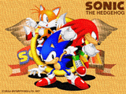

|

Blue is back....And this this time he's come with a vengeance! After a long streak of not being seen in the gameworld or lower par than usual Sonic games. Henceforth comes the Sonic game to top ALL Sonic games! It is the ULTIMATE ADVENTURE! Or rather - The Sonic Adventure!
Nearly five years after the release of the last true Sonic game, Sonic & Knuckles, the stage is set for the world to see blue once more. Your pupils are likely to look just like the Dreamcast logo after seeing the blue speed demon strut his stuff on Sega's new super-console...Sonic Adventure is coming, and there is no turning back. Strap up your red sneakers and grab a couple of Rings for the road...it's going to be a FAST trip....
|